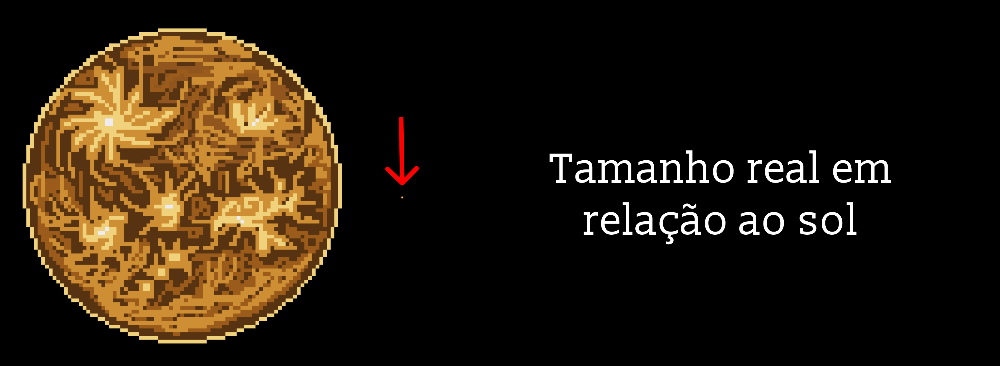

Vênus: um astro brilhante
Vênus é o segundo planeta a partir do Sol e o mais parecido com a Terra em tamanho, por isso é chamado de "planeta irmão". Seu nome vem da deusa romana do amor e da beleza, porque é o astro mais brilhante do céu noturno depois da Lua. No Brasil, é conhecido como Estrela d'Alva, embora não seja uma estrela, porque aparece brilhando forte logo antes do amanhecer ou logo depois do pôr do Sol.
Um planeta que gira ao contrário
Vênus leva 225 dias para dar a volta no Sol, mas precisa de 243 dias para girar uma vez em torno de si mesmo. Ou seja, ele completa uma volta ao redor do Sol antes de terminar uma volta em torno do próprio eixo. E ele gira no sentido oposto ao da maioria dos planetas, então lá o Sol nasce no oeste e se põe no leste.

O planeta mais quente do Sistema Solar
Mercúrio fica mais perto do Sol, mas o mais quente é Vênus. Sua atmosfera, feita quase só de gás carbônico, funciona como um cobertor grosso que prende o calor, num efeito estufa descontrolado. A temperatura fica em torno de 465 °C, de dia e de noite, o bastante para derreter chumbo.
Esmagador e ácido
O ar de Vênus é tão denso que a pressão na superfície é cerca de 90 vezes maior que a da Terra, como estar a quase 1 km de profundidade no oceano. O planeta também é coberto por nuvens de ácido sulfúrico, que escondem a superfície de telescópios comuns.
Vulcões por toda parte
Vênus tem mais vulcões do que qualquer outro planeta. Em 2023, cientistas compararam imagens antigas da sonda Magellan e encontraram uma cratera vulcânica que mudou de forma em poucos meses, um forte sinal de que ainda há vulcões ativos por lá.
Pousar no inferno
Nenhum lugar do Sistema Solar é tão hostil para uma sonda. Mesmo assim, a União Soviética conseguiu: em 1970, a Venera 7 foi a primeira nave a enviar dados da superfície de outro planeta, e em 1982 a Venera 13 aguentou 127 minutos antes de ser destruída pelo calor e pela pressão, enviando as primeiras fotos coloridas do solo venusiano.
Uma Terra que deu errado?
Alguns cientistas acreditam que Vênus pode ter tido oceanos e um clima ameno no passado, antes de o efeito estufa sair do controle. Outros acham que ele nunca foi úmido, e o debate continua. Para responder a essa pergunta, o Envision, da ESA, começou a ser construído em 2025 e é uma das três grandes missões da chamada "década de Vênus", junto com DAVINCI e VERITAS, da NASA, previstas para a década de 2030, embora o orçamento apertado dificulte manter as três em andamento.
Bonito por fora e infernal por dentro, Vênus mostra como dois planetas quase gêmeos podem ter destinos completamente diferentes.